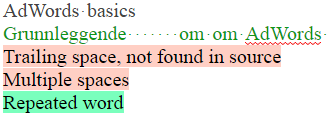
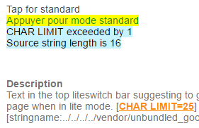
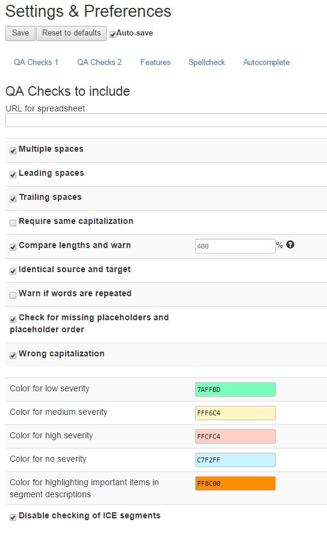
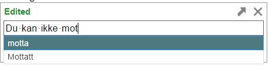

|
|
We've added a number of state-of-the-art tools to GTT: built-in language checks and the ability to add your own checks, spellchecking, typing autocompletion, and much more.
63% is the fuzzy match percentage. This means that 63% of the segment has relevance.
Language checks


You can even make your own tailored language checks* and share with your team. Templates and quick start guides are included.
Built-in checks include:
* Checks can be made using a simple, powerful syntax, and while it's completely optional and not essential, you can also leverage Regular Expressions, including the XRegExp library. |
Options screen

|
Typing prediction
|
Glossary-related
|
Keyword filtering & segment type filtering
|
Other
|